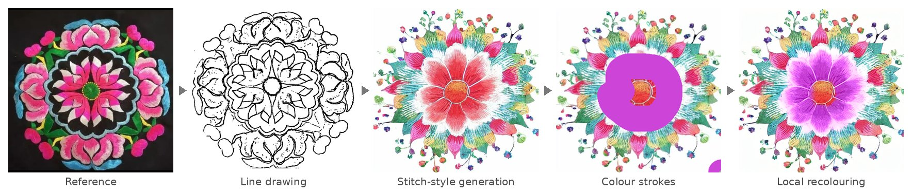
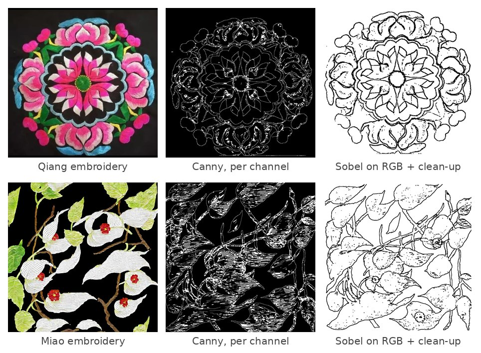
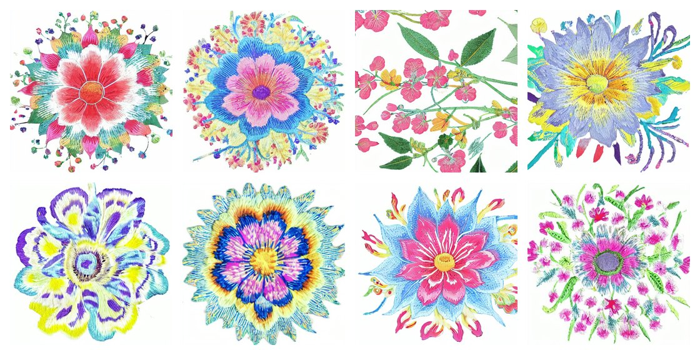
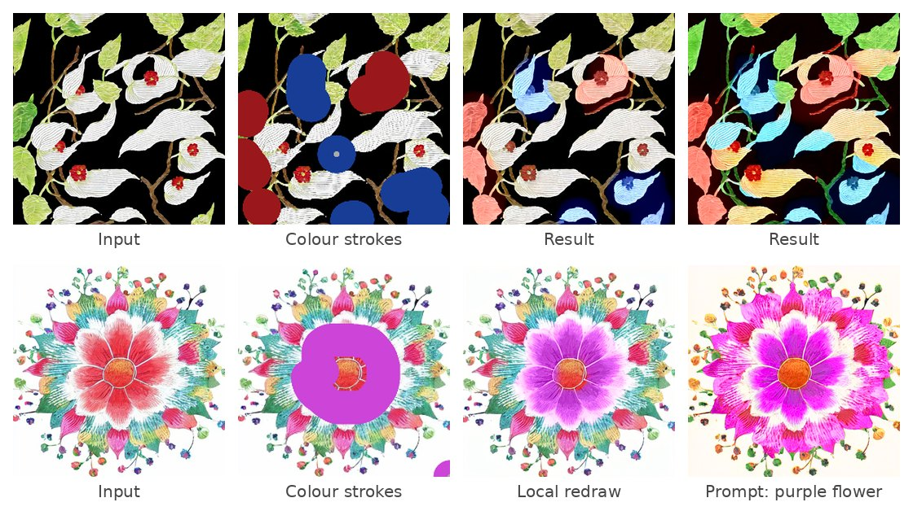

Miao and Qiang embroidery, February – August 2025

From a reference embroidery to a clean line drawing, a new pattern in a stitch style, and a locally recoloured version.
Photographs of embroidery mix the outline of a motif with the texture of every stitch, so standard edge detectors return noisy, broken lines, and general image models know little about specific stitch styles. This project builds a diffusion-based workflow for pattern design: extract a clean line drawing from an embroidery, generate new patterns in a given stitch style from a few examples, and change the colours of selected regions without redrawing the rest.

Per-channel Canny keeps the stitch texture; the colour-gradient pipeline keeps the outlines.
Instead of binarising the image, the pipeline normalises colour and detects edges from colour change. Sobel gradients on each RGB channel are merged, then dilation and the removal of small, unclosed fragments leave a line drawing a designer can edit. An HSV variant was also tested (the value channel worked best on black grounds), and CNN edge detectors such as LDC, TEED and MuGE served as references.

Patterns generated from line drawings with the flat-stitch LoRA.
A LoRA for flat stitch was trained on 21 reference images, cropped and flipped to 42, at 512×512 with hand-written captions and a trigger word, on Stable Diffusion 1.5. The base model was merged 5:5 with a model fine-tuned on Chinese illustration, and image-to-image generation from line drawings produces new patterns that keep the drawn structure while taking on the stitch texture.

Colour strokes recolour only the marked regions; a text prompt changes colour more globally.
For colour, the generator is combined with Control-Color (CVPR 2024), which accepts colour strokes, text prompts or exemplar images. Strokes recolour the selected regions in 7–10 seconds and leave the rest of the pattern in place.
Colour set only through the prompt was unreliable with the merged model and could drift from the drawn structure, most of all for less common motifs such as the dove-tree flower, where the line drawing alone does not say what the shape is. Fine stitch detail also blurs at 512×512. Structure control with ControlNet, and pairing the line drawing with an understanding of the motif, are the natural next steps.